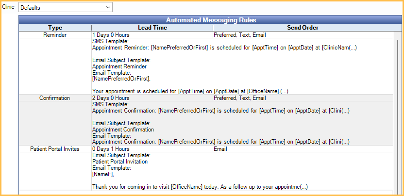

Automated Messaging
Use the eServices Automated Messaging window to determine which automated messaging features to utilize and set up.
In eServices Setup, click Automated Messaging.

Automated messaging includes eReminders, eConfirmations, Automated Thank-Yous, Arrivals, Patient Portal Invites, and General Messages.
Some features require an additional fee. First, sign up for these features in eServices Signup.
Advanced Settings: Click to open Automated Messaging Advanced Settings.
Preferences: Click to open Automated Messaging Preferences.
Activate / Deactivate Features
Choose which features to activate in the upper left.

Active features display in green. Inactive features display in red.
To activate a feature, click the Activate button. To deactivate a feature, click the Deactivate button.
Add Rules
Rules determine the timing and message sent on automated messages. See the Edit Rule window for details.

Before Appointment: These rules apply to messages sent before the appointment time.
- Add eReminder: Add rules for eReminders.
- Add Confirmation: Add rules for eConfirmations.
- Add Auto Thank-You: Add rules for Automated Thank-You messages.
- Add New Patient Thank-You: Add rules for New Patient Thank-You messages.
- Add Patient Portal Invite: Add rules for Patient Portal invites sent before the appointment.
At Appointment: These rules apply to messages sent at the time of the appointment.
- Add Arrival: Add rules for Arrival messages.
After Appointment: These rules apply to messages sent after an appointment has been set complete.
- Add Patient Portal Invite: Add rules for Patient Portal Invites sent after an appointment.
- Add General Message: Add a rule for general/generic messages sent after an appointment.
Automated Messaging Rules Grid
Existing rules display in the Automated Messaging Rules grid. Double-click a rule to edit.
Clinic: Before creating or editing a rule, use the Clinic dropdown to select the clinic and any clinic-specific settings.
- To create default rules, select Defaults as the clinic, then create the rules.
- To apply default rules to a clinic, select the clinic, then check Use Defaults.
- To create clinic-specific rules, select the clinic, uncheck Use Defaults, then create the rules.
- To turn on/off automation by clinic, select the clinic, then check/uncheck Enable Automation for Clinic.
Grid Headings:
- Type: The type of rule (e.g., Confirmations, Reminders, etc).
- Lead Time: How far in advance of an appointment, or after an appointment, the message is sent to the patient.
- Send Order: The order and method in which the message is sent to the patient.